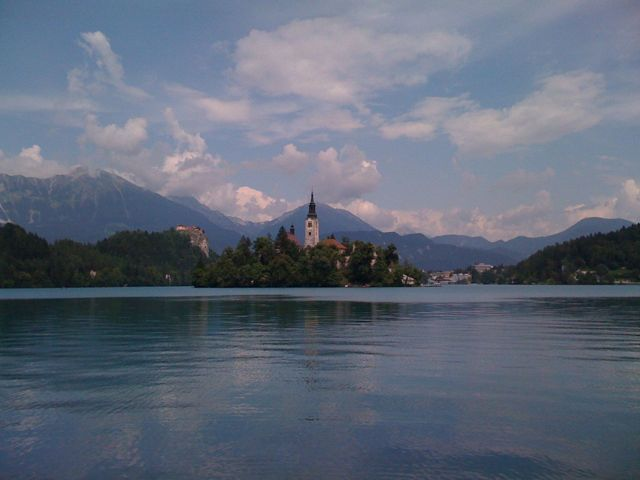
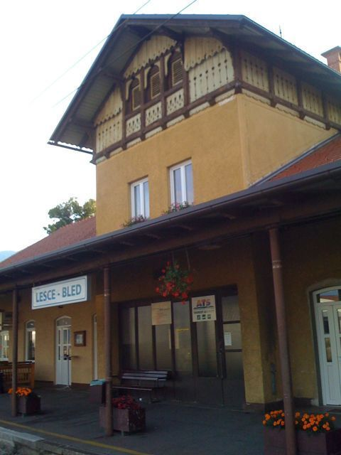
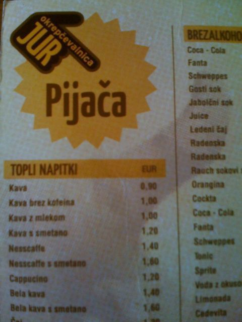

Posted: July 4th, 2009 | Author: Carrie Knittel | Filed under: Wedding | Tags: ljubljana, slovenia | Comments Off
Last night we went out in Ljubljana in an area called Metelkova. It used to be Yugoslavian military barracks, but now the artists have taken it over. There are 7 grungy club/bars (which the city periodically tries to shut down) scattered around a couple courtyards sprayed with graffiti and with some really eccentric sculpture. We grabbed some warm beers and sat in one of the courtyards. I’ve never been anywhere like it, and this is probably the least touristy thing we have experienced so far (with the exception of hanging out with Burak and Emrah in Istanbul). Very cool.


Posted: July 3rd, 2009 | Author: Carrie Knittel | Filed under: Wedding | Tags: lake bled, slovenia | Comments Off
Here are a few pictures of Lake Bled, Castle Bled and the church on the island in Lake Bled.
The stairs in the one photo lead up to a church that sits on the island. When there is a wedding at the church, the groom must carry the bride up the stairs to prove he’s fit for marriage! Carter offered to carry me up, but since he had just rowed us to the island I let him off the hook.
We stayed in a private room in a hostel outside of Bled that was run by a really sweet family. For 6 euros Mama whipped us up a delicious Slovenian dinner.



Posted: July 2nd, 2009 | Author: Carter Rabasa | Filed under: Wedding | Tags: bled, germany, slovenia, switzerland | Comments Off
Catching the night train from Munich to Lake Bled (Slovenia) was a harrowing experience. I’m fairly sure that I sprinted (full out) a cumulative mile as I changed money, located trains, and tracked down information booths. Multiple times we were told contradictory things about which train would get us to Bled, most of the time getting the response “Bled?”
We finally found the right car and secured a sleeping compartment. We were joined by a nice older lady who spoke no English but did help make Carrie’s bed. After paying the 40 euro surcharge I clambered into my top bunk and passed out.
We woke up just a short while before the train would arrive in Bled. Which was great. But the conductor still had our Eurail pass. Which was bad. Those passes are not stored in a database, are not reproducable, and are basically 24 hundred dollar bills with our names scribbled on them. I frantically looked around for him and just as we were about to have to disembark, he emerged from a sleep car rubbing his bed head. And all was right with the world and we had arrived in Slovenia.


{kind=link}
{kind=link}
{kind=link}
Recent Comments